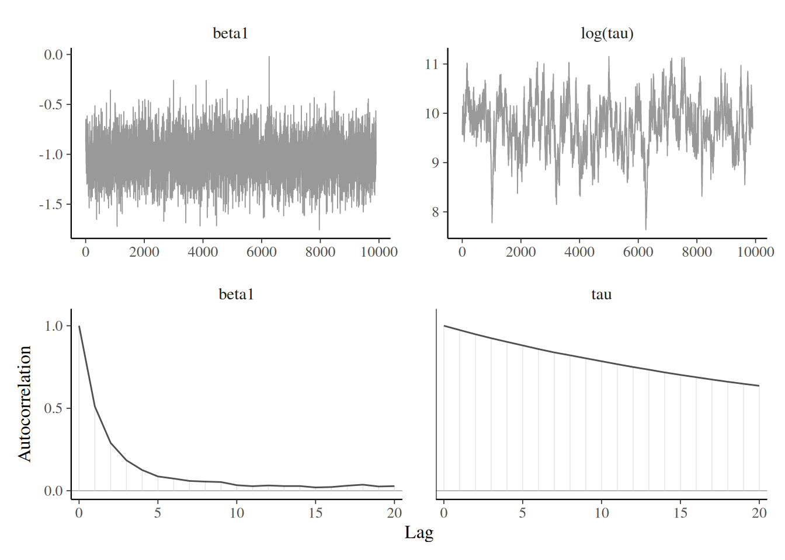

Bayesian modelling
Computational strategies and diagnostics
Last compiled Wednesday Feb 12, 2025
Outline
How do we assess convergence of a MCMC algorithm?
- the algorithm implementation must be correct,
- the chain must have converged to the target posterior.
- the effective sample size must be sufficiently large for inference.
Strategies
Many diagnostics require running multiple chains
- check within vs between variance,
- determine whether they converge to the same target.
Correct implementation
We can generate artificial data to check the procedure.
Simulation-based calibration (Talts et al., 2020) proceeds with, in order
- \(\boldsymbol{\theta}_0 \sim p(\boldsymbol{\theta}),\)
- \(\boldsymbol{y}_0 \sim p(\boldsymbol{y} \mid \boldsymbol{\theta}_0),\)
- \(\boldsymbol{\theta}_1, \ldots, \boldsymbol{\theta}_B \sim p(\boldsymbol{\theta} \mid \boldsymbol{y}_0 ).\)
Simulation-based calibration
- Conditional on the simulated \(\boldsymbol{y}\), the distribution of \(\boldsymbol{\theta}_0\) is the same as that of \(\boldsymbol{\theta}_1, \ldots, \boldsymbol{\theta}_B.\)
- We do a dimension reduction step taking the test function \(t(\cdot)\) to get the rank of the prior draw among the posterior ones, breaking ties at random if any.
- These steps are repeated \(K\) times, yielding \(K\) test functions \(T_1, \ldots, T_K.\) We then test for uniformity using results from Säilynoja et al. (2022).
Breaking down the Markov chain
We distinguish between three phases
- burn in period: initial draws allowing the algorithm to converge to it’s stationary distribution (discarded)
- warmup adaptation period: tuning period for the proposal std. deviation, etc. (discarded)
- sampling period: draws post burn in and warmup that are kept for inference
We can optionally thin by keeping one every \(k\) iterations from the sampling period to reduce the storage.
Visual diagnostic: trace plots
Display the Markov chain sample path as a function of the number of iterations.
- Ideally, run multiple chains to see if they converge to the same mode (for multimodal behaviour).
- Markov chains should look like a fat hairy caterpillar!
- Check the
bayesplotandcodaR packages (trace plot, trace rank, correlograms, marginal densities, etc.)
Checking convergence with multiple chains

Four healthy parallel chains for parameters.
Trace rank plot
A trace rank plot compares the rank of the values of the different chain at a given iteration.
- With good mixing, the ranks should switch frequently and be distributed uniformly across integers.
Effective sample size
Are my chains long enough to compute reliable summaries?
Compute the sample size we would have with independent draws by taking \[ \mathsf{ESS} = \frac{B}{\left\{1+2\sum_{t=1}^\infty \gamma_t\right\}} \] where \(\gamma_t\) is the lag \(t\) autocorrelation.
The relative effective sample size is simply \(\mathsf{ESS}/B\): small values indicate pathological or inefficient samplers.
How many samples?
We want our average estimate to be reliable!
We probably need \(\mathsf{ESS}\) to be several hundred
We can estimate the variance of the target to know the precision
(related question: how many significant digits to report?)
Estimating the variance (block method)
- Break the chain of length \(B\) (after burn in) in \(K\) blocks of size \(\approx K/B\).
- Compute the sample mean of each segment. These values form a Markov chain and should be approximately uncorrelated.
- Compute the standard deviation of the segments mean. Rescale by \(K^{-1/2}\) to get standard error of the global mean.
More efficient methods using overlapping blocks exists.
Block means in pictures

Figure 1: Calculation of the standard error of the posterior mean using the batch method.
Cautionary warning about stationarity
Batch means only works if the chain is sampling from the stationary distribution!
The previous result (and any estimate) will be unreliable and biased if the chain is not (yet) sampling from the posterior.
Lack of stationarity

Figure 2: Traceplots of three Markov chains for the same target with different initial values for the first 500 iterations (left) and trace rank plot after discarding these (right). The latter is indicative of the speed of mixing.
Gelman–Rubin diagnostic
Suppose we run \(M\) chains for \(B\) iterations, post burn in.
Denote by \(\theta_{bm}\) the \(b\)th draw of the \(m\)th chain, we compute the global average \[\overline{\theta} = \frac{1}{BM}\sum_{b=1}^B \sum_{m=1}^m \theta_{bm}\] and similarly the chain-specific sample average and variances, respectively \(\overline{\theta}_m\) and \(\widehat{\sigma}^2_m\) (\(m=1, \ldots, M\)).
Sum of square decomposition
The between-chain variance and within-chain variance estimator are \[\begin{align*} \mathsf{Va}_{\text{between}} &= \frac{B}{M-1}\sum_{m=1}^M (\overline{\theta}_m - \overline{\theta})^2\\ \mathsf{Va}_{\text{within}} &= \frac{1}{M}\sum_{m=1}^m \widehat{\sigma}^2_m \end{align*}\]
Potential scale reduction statistic
The Gelman–Rubin diagnostic, denoted \(\widehat{R}\), is obtained by running multiple chains and considering the difference between within-chain and between-chains variances,
\[\begin{align*} \widehat{R} = \left(\frac{\mathsf{Va}_{\text{within}}(B-1) + \mathsf{Va}_{\text{between}}}{B\mathsf{Va}_{\text{within}}}\right)^{1/2} \end{align*}\]
Any value of \(\widehat{R}\) larger 1 is indicative of problems of convergence.
Bad chains

Figure 3: Two pairs of Markov chains: the top ones seem stationary, but with different modes and \(\widehat{R} \approx 3.4\). The chains on the right hover around zero, but do not appear stable, with \(\widehat{R} \approx 1.6\).
One chain or multiple chains?
Generally, it is preferable to run a single chain for a longer period than run multiple chains sequentially
- there is a cost to initializing multiple times with different starting values since we must discard initial draws.
- but with parallel computations, multiple chains are more frequent nowadays.
- multiple diagnostics require running several chains.
Posterior predictive checks
- For each of the \(B\) draws from the posterior, simulate \(n\) observations from the posterior predictive \(p(\widetilde{\boldsymbol{y}} \mid \boldsymbol{y})\)
- For each replicate, compute a summary statistics (median, quantiles, std. dev., etc.)
- Compare it with the same summary computed for the sample \(\boldsymbol{y}\).
Posterior predictive checks
Figure 4: Posterior predictive checks for the standard deviation (top) and density of posterior draws (bottom) for hierarchical Poisson model with individual effects (left) and simpler model with only conditions (right).
Log pointwise predictive density
Consider the expected value of the observation-wise log density with respect to the posterior distribution \(p(\boldsymbol{\theta} \mid \boldsymbol{y})\), \[\begin{align*} \mathsf{LPPD}_i = \mathsf{E}_{\boldsymbol{\theta} \mid \boldsymbol{y}} \left\{ \log p(y_i \mid \boldsymbol{\theta})\right\}, \end{align*}\]
The higher the value of \(\mathsf{LPPD}_i\), the better the fit for that observation.
Widely available information criterion
To build an information criterion, we add a penalization factor that approximates the effective number of parameters in the model, with \[\begin{align*} n\mathsf{WAIC} = -\sum_{i=1}^n \mathsf{LPPD}_i + \sum_{i=1}^n \mathsf{Va}_{\boldsymbol{\theta} \mid \boldsymbol{y}}\{\log p(y_i \mid \boldsymbol{\theta})\} \end{align*}\] where we use again the empirical variance to compute the rightmost term.
Smaller values of \(\mathsf{WAIC}\) are better.
Pseudo-code for WAIC
Evaluate the log likelihood for each posterior draw and each observation.
Bayesian leave-one-out cross validation
In Bayesian setting, we can use the leave-one-out predictive density \[p(y_i \mid \boldsymbol{y}_{-i})\] as a measure of predictive accuracy.
We can use importance sampling to approximate the latter.
Requirement: need to keep track of the log likelihood of each observation for each posterior draw (\(B \times n\) values).
LOO-CV diagnostics
We can draw \(B\) samples from \(p(\widetilde{y} \mid \boldsymbol{y}_{-i})\) and compute the rank of \(y_i\).
Under perfect calibration, ranks should be uniform.
Leave-one-out with quantile-quantile plots

Figure 5: Quantile-quantile plots based on leave-one-out cross validation for model for the hierarchical Poisson model fitted to the Upworthy data with the individual random effects (left) and without (right).
Deviance information criterion
The deviance information criterion of Spiegelhalter et al. (2002) is \[\begin{align*} \mathsf{DIC} = -2 \ell(\widetilde{\boldsymbol{\theta}}) + 2 p_D \end{align*}\] where \(p_D\) is the posterior expectation of the deviance relative to the point estimator of the parameter \(\widetilde{\boldsymbol{\theta}}\) (e.g., the maximum a posteriori or the posterior mean) \[\begin{align*} p_D = \mathsf{E}\{D(\boldsymbol{\theta}, \widetilde{\boldsymbol{\theta}}) \mid \boldsymbol{y}\}= \int 2 \{ \ell(\widetilde{\boldsymbol{\theta}}) - \ell(\boldsymbol{\theta})\} p(\boldsymbol{\theta} \mid \boldsymbol{y}) \mathrm{d} \boldsymbol{\theta} \end{align*}\]
Criticism of DIC
- The DIC can be easily evaluated by keeping track of the log likelihood evaluated at each posterior draw from a Markov chain Monte Carlo algorithm.
- The penalty term \(p_D\) is however not invariant to reparametrizations.
- A Gaussian approximation to the MLE under suitable regularity conditions shows that the \(\mathsf{DIC}\) is equivalent in large samples to \(\mathsf{AIC}.\)
Computational strategies
Sources of poor mixing
Slow mixing can be due to the following:
- poor proposals
- strong correlation between posterior parameters
- overparametrization and lack of identifiability
Computational strategies
These problems can be addressed using one of the following:
Removing redundant parameters
Consider a one-way ANOVA with \(K\) categories, with observation \(i\) from group \(k\) having \[\begin{align*} Y_{i,k} &\sim \mathsf{Gauss}(\mu + \alpha_k, \sigma^2_y) \\ \alpha_k &\sim \mathsf{Gauss}(0, \sigma^2_\alpha) \end{align*}\] and an improper prior for the mean \(p(\mu) \propto 1.\)
There are \(K+1\) mean parameters for the groups, so we can enforce a sum-to-zero constraint for \(\sum_{k=1}^K \alpha_k=0\) and sample \(K-1\) parameters for the difference to the global mean.
Parameter expansion
Add redundant parameter to improve mixing by decorrelating (Liu et al., 1998)
\[\begin{align*} Y_{i,k} &\sim \mathsf{Gauss}(\mu + \xi\eta_k, \sigma^2_y) \\ \eta_k &\sim \mathsf{Gauss}(0, \sigma^2_\eta) \end{align*}\] so that \(\sigma_\alpha = |\xi|\sigma_\eta.\)
Marginalization
Given a model \(p(\boldsymbol{\theta}, \boldsymbol{Z})\), reduce the dependance by sampling from the marginal
\[ p(\boldsymbol{\theta})= \int p(\boldsymbol{\theta}, \boldsymbol{z}) \mathrm{d} \boldsymbol{z}. \]
This happens for data augmentation, etc., and reduces dependency between parameters, but typically the likelihood becomes more expensive to compute
Gaussian model with random effects
Consider a hierarchical Gaussian model of the form \[\begin{align*} \boldsymbol{Y} = \mathbf{X}\boldsymbol{\beta} + \mathbf{Z}\boldsymbol{B} + \boldsymbol{\varepsilon} \end{align*}\] where
- \(\mathbf{X}\) is an \(n \times p\) design matrix with centered inputs,
- \(\boldsymbol{\beta} \sim \mathsf{Gauss}(\boldsymbol{0}_p, \sigma^2\mathbf{I}_p),\)
- \(\boldsymbol{B}\sim \mathsf{Gauss}_q(\boldsymbol{0}_q, \boldsymbol{\Omega})\) are random effects and
- \(\boldsymbol{\varepsilon} \sim \mathsf{Gauss}_n(\boldsymbol{0}_n, \kappa^2\mathbf{I}_n)\) are independent white noise.
Marginalization of Gaussian models
We can write \[\begin{align*} \boldsymbol{Y} \mid \boldsymbol{\beta}, \boldsymbol{B}, \sigma^2 &\sim \mathsf{Gauss}_n(\mathbf{X}\boldsymbol{\beta} + \mathbf{Z}\boldsymbol{B}, \sigma^2\mathbf{I}_p)\\ \boldsymbol{Y} \mid \boldsymbol{\beta} &\sim \mathsf{Gauss}_n(\mathbf{X}\boldsymbol{\beta}, \mathbf{Q}^{-1}), \end{align*}\] where the second line corresponds to marginalizing out the random effects \(\boldsymbol{B}.\)
Efficient calculations for Gaussian models
If, as is often the case, \(\boldsymbol{\Omega}^{-1}\) and \(\mathbf{Z}\) are sparse matrices, the full precision matrix can be efficiently computed using Shermann–Morisson–Woodbury identity as \[\begin{align*} \mathbf{Q}^{-1} &= \mathbf{Z}\boldsymbol{\Omega}^{-1}\mathbf{Z}^\top + \kappa^2 \mathbf{I}_n,\\ \kappa^2\mathbf{Q} & = \mathbf{I}_n - \mathbf{Z} \boldsymbol{G}^{-1} \mathbf{Z}^\top,\\ \boldsymbol{G} &= \mathbf{Z}^\top\mathbf{Z} + \kappa^2 \boldsymbol{\Omega}^{-1} \end{align*}\] Section 3.1 of Nychka et al. (2015) details efficient ways of calculating the quadratic form involving \(\mathbf{Q}\) and it’s determinant.
Blocking
Identify groups of strongly correlated parameters and propose a joint update for these.
- The more parameters we propose at the same time, the lower the chance of acceptance
- Often ways to sample these efficiently
Tokyo rainfall
We consider data from Kitagawa (1987) that provide a binomial time series giving the number of days in years 1983 and 1984 (a leap year) in which there was more than 1mm of rain in Tokyo; see section 4.3.4 of Rue & Held (2005).
We have \(T=366\) days and \(n_t \in \{1,2\}\) \((t=1, \ldots, T)\) the number of observations in day \(t\) and \(y_t=\{0,\ldots, n_t\}\) the number of days with rain.
Smoothing probabilities
The objective is to obtain a smoothed probability of rain. The underlying probit model considered takes \(Y_t \mid n_t, p_t \sim \mathsf{binom}(n_t, p_t)\) and \(p_t = \Phi(\beta_t).\)
We specify the random effects \(\boldsymbol{\beta} \sim \mathsf{Gauss}_{T}(\boldsymbol{0}, \tau^{-1}\mathbf{Q}^{-1}),\) where \(\mathbf{Q}\) is a \(T \times T\) precision matrix that encodes the local dependence.
A circular random walk structure of order 2 is used to model the smooth curves by smoothing over neighbors, and enforces small second derivative. This is a suitable prior because it enforces no constraint on the mean structure.
Random walk prior
This amounts to specifying the process with for \(t \in \mathbb{N} \mod 366 + 1\) \[\begin{align*} \Delta^2\beta_t &= (\beta_{t+1} - \beta_t) - (\beta_t - \beta_{t-1}) \\&=-\beta_{t-1} +2 \beta_t - \beta_{t+1} \sim \mathsf{Gauss}(0, \tau^{-1}). \end{align*}\]
Circulant precision matrix
This yields an intrinsic Gaussian Markov random field with a circulant precision matrix \(\tau\mathbf{Q}\) of rank \(T-1,\) where \[\begin{align*} \mathbf{Q} &= \begin{pmatrix} 6 & -4 & 1 & 0 & \cdots & 1 & -4\\ -4 & 6 & -4 & 1 & \ddots & 0 & 1 \\ 1 & -4 & 6 & -4 & \ddots & 0 & 0 \\ \vdots & \ddots & \ddots & \ddots & \ddots & \ddots & \vdots \\ -4 & 1 & 0 & 0 & \cdots & -4 & 6 \end{pmatrix}. \end{align*}\] Because of the linear dependency, the determinant of \(\mathbf{Q}\) is zero.
Prior draws
Figure 6: Five realizations from the cyclical random walk Gaussian prior of order 2.
Gibbs sampling for Tokyo data
We can perform data augmentation by imputing Gaussian variables, say \(\{z_{t,i}\}\) from truncated Gaussian, where \(z_{t,i} = \beta_t + \varepsilon_{t,i}\) and \(\varepsilon_{t,i} \sim \mathsf{Gauss}(0,1)\) are independent standard Gaussian and \[\begin{align*} z_{t,i} \mid y_{t,i}, \beta_t \sim \begin{cases} \mathsf{trunc. Gauss}(\beta_t, 1, -\infty, 0) & y_{t,i} = 0 \\ \mathsf{trunc. Gauss}(\beta_t, 1, 0, \infty) & y_{t,i} =1 \end{cases} \end{align*}\]
Posterior for Tokyo data
The posterior is proportional to \[\begin{align*} p(\boldsymbol{\beta} \mid \tau)p(\tau)\prod_{t=1}^{T}\prod_{i=1}^{n_t}p(y_{t,i} \mid z_{t,i}) p(z_{t,i} \mid \beta_t) \end{align*}\]
Data augmentation for Tokyo data
Once we have imputed the Gaussian latent vectors, we can work directly with the values of \(z_t = \sum_{i=1}^{n_t} z_{i,t}\) \[\begin{align*} p(\boldsymbol{\beta}, \tau) &\propto \tau^{(T-1)/2}\exp \left( - \frac{\tau}{2} \boldsymbol{\beta}^\top \mathbf{Q} \boldsymbol{\beta}\right) \\& \times \exp\left\{ - \frac{1}{2} (\boldsymbol{z} - \boldsymbol{\beta})^\top \mathrm{diag}(\boldsymbol{n})(\boldsymbol{z} - \boldsymbol{\beta})\right\} \\& \times \tau^{a-1}\exp(-\tau b) \end{align*}\] where \(\boldsymbol{z} = (z_1, \ldots, z_T).\)
Gibbs for Tokyo data - conditionals
Completing the quadratic form shows that \[\begin{align*} \boldsymbol{\beta} \mid \boldsymbol{z}, \tau &\sim \mathsf{Gauss}_T\left(\mathbf{Q}^{\star -1} \boldsymbol{z}, \mathbf{Q}^{\star -1}\right)\\ \tau \mid \boldsymbol{\beta} & \sim \mathsf{gamma}\left( \frac{T-1}{2} + a, \frac{\boldsymbol{\beta}^\top \mathbf{Q}\boldsymbol{\beta}}{2} + b \right),\\ \mathbf{Q}^{\star} &= \left\{\tau \mathbf{Q} + \mathrm{diag}(\boldsymbol{n})\right\} \end{align*}\]
Posterior prediction for probability of rainfall
Posterior prediction for probability of rainfall
Blocking vs joint update
Compare the following two stategies
- joint update: given \(\boldsymbol{z}\) and \(\tau\), simulate \(\boldsymbol{\beta}\) jointly
- one-parameter at a time: starting from \(i \sim \mathsf{unif}(\{1, \ldots, 366\}),\) get index \(t= i \mod 366 + 1\) and simulate \(\beta_i \mid \boldsymbol{\beta}_{-i}, \boldsymbol{z}, \tau\) one at a time.
Blocking strategy
Trace plots for Tokyo with blocking of random effects
Individual update strategy
Trace plots for Tokyo with random scan Gibbs for random effects
Lessons from the Tokyo example
What happened?
- there is lower autocorrelation with the joint update (also faster here!) for the \(\boldsymbol{\beta}\)
- in both cases, \(\tau \mid \cdot\) mixes poorly because the values of \(\boldsymbol{\beta}\) were sampled conditional on the previous value.
A better avenue would be to use a Metropolis random walk for \(\tau^{\star}\), simulate \(\boldsymbol{\beta} \mid \tau^{\star}\) and propose the joint vector \((\tau^{\star}, \boldsymbol{\beta}^{\star})\) simultaneously.
One step further
We could also remove the data augmentation step and propose from a Gaussian approximation of the log likelihood, using a Taylor series expansion of the log likelihood about \(\boldsymbol{\beta}_{t-1}\) \[\begin{align*} \log p(\boldsymbol{\beta} \mid \boldsymbol{y}) \stackrel{\boldsymbol{\beta}}{\propto} - \frac{\tau}{2} \boldsymbol{\beta}^\top \mathbf{Q} \boldsymbol{\beta} + \sum_{t=1}^T \log f(y_t \mid \beta_t) \end{align*}\] and the \(y_t\) are conditionally independent in the likelihood. Refer to Section 4.4.1 of Rue & Held (2005) for more details.
Technical aside: in sparsity we trust!
It is crucial to exploit the sparsity structure of \(\mathbf{Q}\) for efficient calculations of the likelihood
- typically requires re-ordering elements to get a banded precision matrix
- precompute the sparse Cholesky
- compute inverse by solving systems of linear equations; there are dedicated algorithms
References